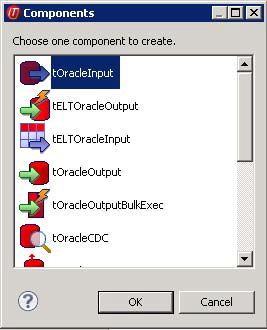
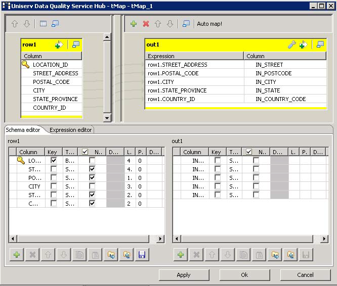

Avertissement
Ce composant est disponible dans la Palette du Studio uniquement si vous avez souscrit à l'édition correspondante de Data Quality Service Hub Studio.
|
Famille de composant |
Data Quality | |
|
Fonction |
Le composant tUniservBTGeneric permet l'exécution d'un processus (Job) créé avec le produit Uniserv DQ Batch Suite. | |
|
Objectif |
Le tUniservBTGeneric envoie les données à DQ Batch Suite et lance le processus spécifié dans DQ Batch Suite. Quand l'exécution du processus est terminée, les résultats sont renvoyés à Data Quality Service Hub Studio pour d'autres opérations. | |
|
Basic settings |
Schema et Edit schema |
Un schéma est une description de lignes, il définit le nombre de champs qui sont traités et passés au composant suivant. Le schéma est soit local (Built-in) soit distant dans le Repository. Cliquez sur Retrieve Schema pour créer un schéma qui pour les composants qui correspondra aux champs d'entrée et de sortie du processus de DQ Batch Suite. |
|
|
Host name |
Nom du serveur maître sur lequel est lancé DQ Batch Suite, entre guillemets doubles. |
|
|
Port |
Numéro du port sur lequel le serveur de DQ Batch Suite est lancé, entre guillemets doubles. |
|
|
Client Server |
Nom du serveur client de DQ Batch Suite, entre guillemets doubles. |
|
|
User name |
Nom d'utilisateur enregistré pour le serveur de DQ Batch Suite. L'utilisateur doit avoir les droits pour exécuter le Job dans DQ Batch Suite. |
|
|
Password |
Mot de passe de l'utilisateur. |
|
|
Job directory |
Répertoire de DQ Batch Suite dans lequel est sauvegardé le processus. |
|
|
Job name |
Nom du processus DQ Batch Suite à exécuter. |
|
|
Job file path |
Chemin d'accès à l'emplacement où le processus exécuté sera sauvegardé. Le chemin vers le fichier doit être absolu. |
|
Advanced settings |
Temporary directory |
Répertoire dans lequel les fichiers temporaires créés lors de l'exécution du processus sont sauvegardés. |
|
|
Input Parameters |
Ces paramètres doivent correspondre aux paramètres de la fonction Input de l'onglet Format du processus. File location : Définit si le fichier d'entrée est sauvegardé dans le pool ou dans le répertoire du processus local. Directory : Si File location = Pool, le répertoire est lié au pool. Si File location = Job, "input" doit être ici spécifié. File name : Nom du fichier délimiteur généré par le composant tUniservBTGeneric et transféré à DQ Batch Suite. Le nom du fichier doit correspondre au nom de fichier défini dans la fonction Input du processus. No. of header rec. : 0 = pas d'en-tête enregistré, 1 = en-tête dans le fichier d'entrée. Field separator : Séparateur de champs défini dans la fonction Input du processus DQ Batch Suite. |
|
|
Output Parameters |
Ces paramètres doivent correspondre aux paramètres de la fonction Output de l'onglet Format du processus. File location : Définit si le fichier d'entrée est sauvegardé dans le pool ou dans le répertoire du processus local. Directory : Si File location = Pool, le répertoire est basé dans le pool. Si File location = Job, "output" doit être ici spécifié. File name : Nom du fichier de sortie au format délimiteur généré par le composant tUniservBTGeneric et transféré à DQ Batch Suite. Le nom du fichier doit correspondre au nom de fichier défini dans la fonction Output du processus. No. of header rec. : 0 = pas d'en-tête enregistré, 1 = en-tête dans le fichier de sortie. Field separator : Séparateur de champs défini dans la fonction Output du processus. |
|
Utilisation |
Le composant tUniservBTGeneric envoie des données à DQ Batch Suite et lance le Job spécifié. Quand l'exécution du Job est terminée, les données de sortie sont renvoyées à Data Quality Service Hub Studio pour d'autres opérations. | |
|
Limitation |
Pour utiliser le composant tUniservBTGeneric, le logiciel Uniserv DQ Batch Suite doit être installé. NoteVeuillez noter que :
| |
Ce scénario décrit un processus dont les résultats de l'exécution sont traités dans Data Quality Service Hub Studio. La source d'entrée du processus est fournie par Data Quality Service Hub Studio.
Le processus a été totalement défini dans DQ Batch Suite et sauvegardé sous le nom "BTGeneric_Sample". Dans la fonction Input, le fichier "btinput.csv" a été spécifié comme fichier d'entrée sauvegardé dans le répertoire du Job et tous ses champs ont été renseignés. Le fichier n'est pas encore créé, car il sera fourni par Data Quality Service Hub Studio. Le processus n'est donc pas encore exécutable.
Dans Data Quality Service Hub Studio, la source d'entrée (dans cet exemple une table d'une base de données Oracle) de ce scénario est déjà enregistrée dans le Repository, de manière à ce que tous les schémas de métadonnées soient disponibles.
Dans la vue Repository, développez le nœud Metadata et le répertoire dans lequel vous avez sauvegardé la source. Glissez-la ensuite dans l'espace de modélisation graphique.
La boîte de dialogue ci-dessous apparaît.
Sélectionnez tOracleInput et cliquez sur OK pour fermer la boîte de dialogue.
Le composant s'affiche dans l'espace de modélisation graphique. La table utilisée dans ce scénario s'appelle LOCATIONS.
Glissez les composants suivants de la Palette dans l'espace de modélisation graphique : deux tMap, un tOracleOutput et un tUniservBTGeneric.
Reliez les composants entre eux à l'aide de liens Row > Main, comme illustré ci-dessous.

Acceptez le schéma du tUniservBTGeneric en cliquant sur Yes dans la fenêtre de propagation qui apparaît.

Double-cliquez sur le tUniservBTGeneric pour afficher sa vue Basic settings.

Saisissez les informations de connexion. Assurez-vous que le chemin d'accès que vous saisissez dans le champ Job File Path est absolu.
Cliquez sur Retrieve Schema pour créer automatiquement un schéma pour le tUniservBTGeneric à partir des définitions d'entrée et de sortie du processus et de renseigner automatiquement les champs de la vue Advanced settings.
Vérifiez que les informations de la vue Advanced settings soient correctes. Les définitions d'entrée et de sortie doivent être exactement identiques à celles du processus DQ Batch Suite. Si nécessaire, adaptez le chemin d'accès aux fichiers temporaires.

Double-cliquez sur le tMap_1 pour ouvrir la fenêtre de mapping du schéma. À gauche se trouve la structure de la source d'entrée et à droite se trouve le schéma du tUniservBTGeneric (et donc l'entrée du processus). En bas se trouve le Schema editor, où vous pouvez trouver et éditer les attributs de chaque colonne.
Mappez les colonnes de la source d'entrée à leurs colonnes du tUnivservBTGeneric respectives. Pour ce faire, sélectionnez une colonne de la source d'entrée et glissez-la dans la colonne du même nom du côté droit.
Cliquez sur OK pour fermer la boîte de dialogue.
Définissez comment traiter les résultats d'exécution du processus et quels composants vont être utilisés.
Avant d'exécuter le processus, assurez-vous que les chemins d'accès sont corrects, que le serveur de DQ Batch Suite fonctionne et que vous pouvez accéder au processus.